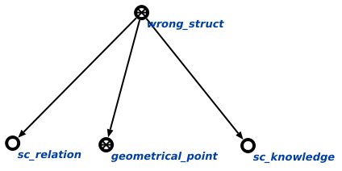

Команда поиска sc-элементов без главного идентификатора предназначена для поиска в базе знаний элементов, у которых отсуствуют необходимые конструкции, в данном случае sc-элементов, имеющих системный идентификатор, но не имеющих ни одного основного.
